Interactive Papers
Each page walks through one mathematics paper, in the paper's own order and numbering, so you can read it with the PDF open beside it. Its figures run the paper's constructions in your browser and check its numbered statements live.
The round button at the top right sets light or dark and the page style (LaTeX, Modern, Book or Large print). The choice carries over to every paper built on the shared design.
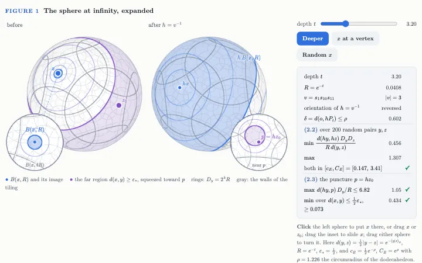
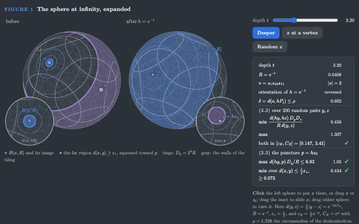
Cannon's Conjecture
A hyperbolic group whose boundary is a $2$-sphere acts geometrically on $\HH^3$, because one combinatorial modulus stays bounded. The page follows the proof section by section: expansions, separating levels, the two contradictions.
On the shared design
Built from the skill in InteractivePapers.md: a contents rail, reference links with previews, companion pages (definitions, notation, dependency graph, reading guide), and orange supplements for material that is not in the paper.
October 2026 walkthroughs
Scroll pages in the earlier house style, each on a preprint from OpenAI's September 2026 release, with exact figures.
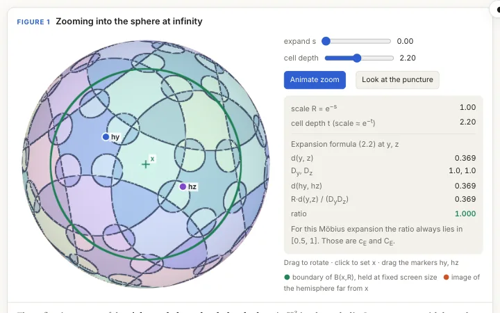
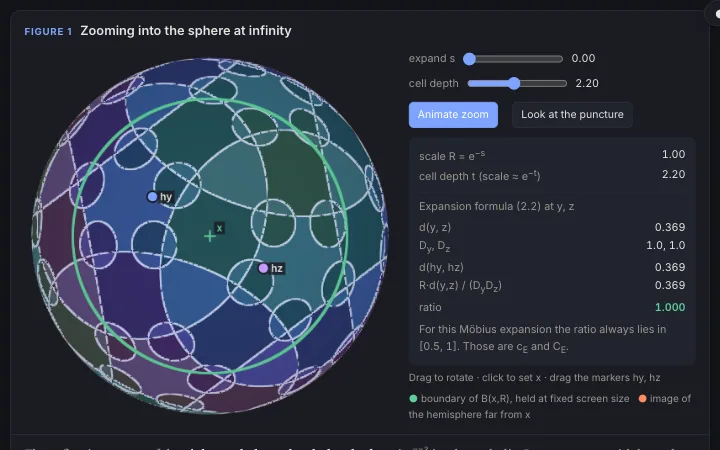
Cannon's Conjecture, by Modulus
The first walkthrough of the same preprint, with a WebGL zoom into the sphere at infinity of a reflection group.
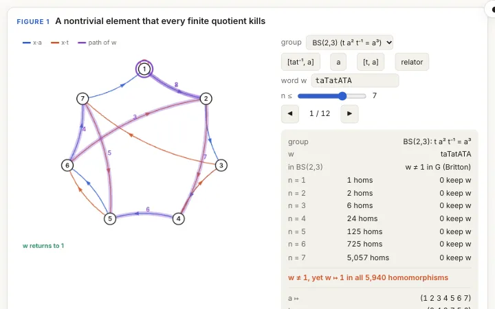
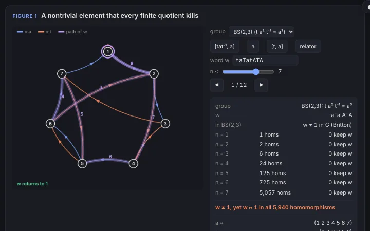
Hyperbolic, Not Residually Finite
A finite triangle complex with very large links gives a hyperbolic group in which some element dies in every finite quotient.
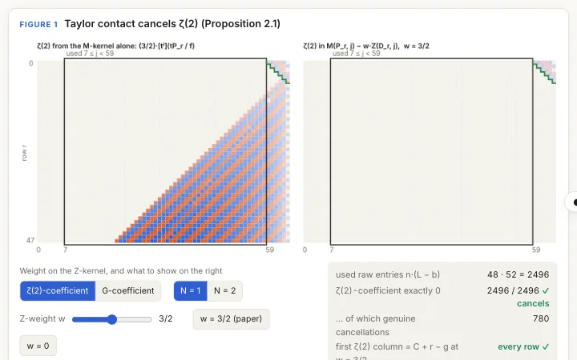
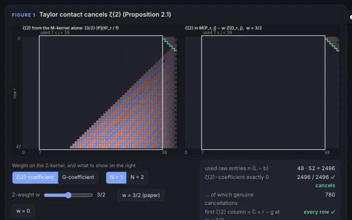
Catalan's Constant, by Determinants
Determinants that would be rational if Catalan's constant were get caught between an arithmetic floor and an analytic ceiling.
Earlier pages
Each in its own style: a slide deck, guided tours, an overview and a transcript.

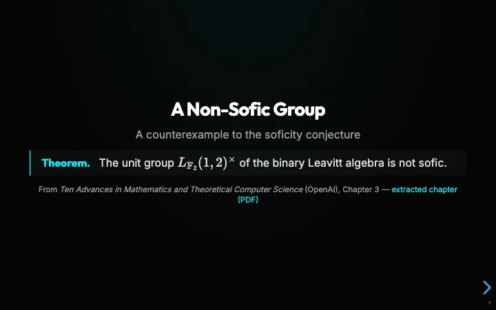
A Non-Sofic Group
The unit group of the binary Leavitt algebra is not sofic: a counterexample to the soficity conjecture, as a slide deck with embedded calculators.
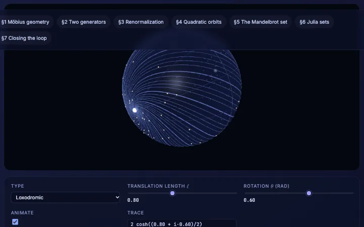
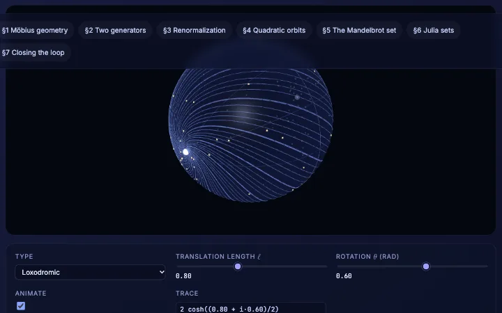
Two-Generator Subgroups of $\PSL(2,\mathbb C)$
When a discrete two-generator group deforms into an indiscrete one, and how that question produced an early picture of the Mandelbrot set.

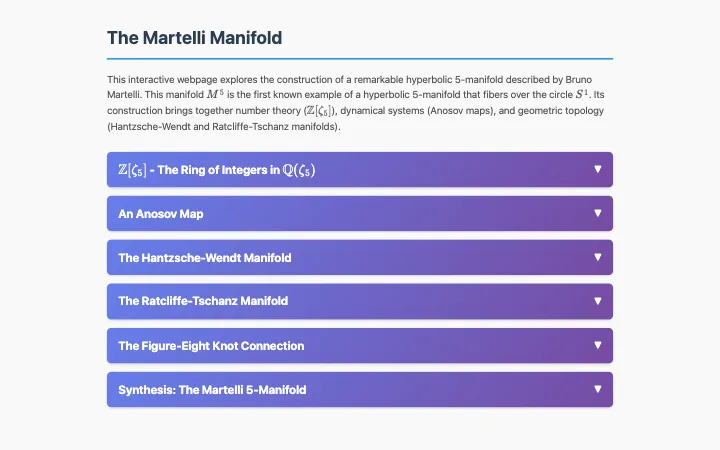
The Martelli Manifold
A hyperbolic $5$-manifold that fibers over the circle, built from $\mathbb Z[\zeta_5]$, an Anosov map, and the Hantzsche–Wendt and Ratcliffe–Tschantz manifolds.
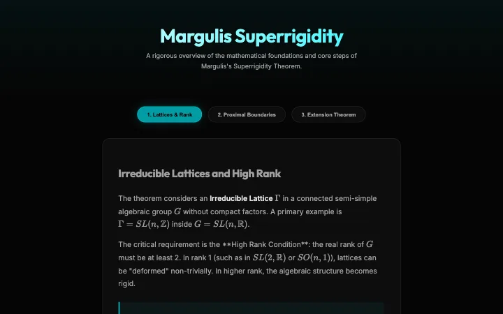

Margulis Superrigidity
The main steps of the superrigidity theorem for irreducible lattices in higher rank: lattices and rank, proximal boundaries, the extension theorem.

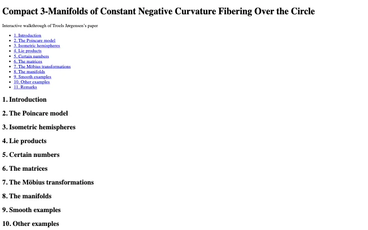
Hyperbolic $3$-Manifolds Fibering over the Circle
Jørgensen's paper, section by section: isometric hemispheres, the matrices, and the fibered manifolds they give.
Tools
Making one
How these pages are built, for anyone writing the next one.